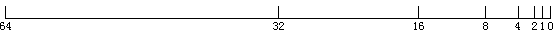

本集出场人物：张小师、波波、神官、阿坤、萤火
友情客串：张小凡
特别感谢：康康兔
夜渐渐暗了下来，在例行任务结束后，『张小师』和队友们并没有像以往一样，急急忙忙赶回「哇牛叉学院」，因为，这是过年前的最后一次任务，等回到学院，大家可能就要暂时分别一段时间。这一年的奋战已经够辛苦了，所以大家觉得可以一起找个地方放松下。“要不我们去「青云餐馆」吃烤兔子？”『波波』提议，“好啊！”众人一拍即合！
「青云餐馆」坐落于青云山脚下，互联14年由萧鼎所建，主厨名叫张小凡，一手烤兔子的绝活远近闻名，现烤现吃，不过张小凡本人是不出面的，都是学徒们出来现烤，除非是「阅之国」皇亲国戚这样的重要人物或者出重金的商人才有此待遇。
当然，『张小师』一行人前去吃烤兔子就是单纯吃烤兔子，并未想过与见到传说中的主厨张小凡，更没有奢想张小凡会亲自为这么几个普通的客人烤兔子。但是，这一天发生的事情完全超出了大家的预料。
『波波』的技能是［人品加护］，也就是任务攻略完毕100%捡到宝贝。但很多时候，捡到的这些宝贝似乎是假宝贝，比方说，“服用后100%腹泻的精灵石”，“遇水即化的泳衣”以及“先脱发再生发秘制生发灵”等等，并不实用，于是都给卖了。
但是，这一次，［人品加护］似乎迎来了大爆发……
众人包间就坐，点好了大号烤兔子，边闲聊边等待厨师出现。很快，包间的门推开了，一个略显帅气的身影出现了，戴着高高的厨师帽，推着串着整只兔子烤架进来了，一切都很自然一切都很平常。但是，当厨师抬起头的时候，不知谁突然尖角了一声，众人面面相觑，此不知哪里窜出一个声音，“你……是不是就是那个传说中比宋仲基还帅比李易峰还酷厨艺出神入化「青云餐馆」大当家，张小凡？”
厨师微微一笑，默不作声。“没错，一定是你！我『阿坤』的［记忆宫殿］技能之一就是过目不忘。2年前我们「阅之国」成立时候照片中就有你。”
“喔噢，不会吧……”大家都惊讶地看着彼此。因为现在这种状况就等同于在薛之谦开的火锅店吃火锅但是薛之谦亲自为你服务，大家都不敢相信，纷纷开始索要签名。
“诸位稍安，再耽搁就错过兔肉最佳烧烤时间了，我们不妨先饱食欲，签名之事可以等兔肉烤完再说也不迟，不知可否？”
“恩，可以的”，『神官』摆了摆手，让大家安静。
然后，厨师开始了娴熟的烤兔子制作……
此时，『波波』没忍住，问道：“请问，你现在是在拍真人秀节目吗？否则您这样的大人物怎么会亲自给我们烤兔子呢？”
“这个嘛，说来也惭愧”，厨师边给兔子划口子边说道，“本来我有6名弟子，现在要过年了，客人也少，就有2人我让他先回老家了，剩下的3名弟子，一个便秘很多天于是吃腹泻精灵石，结果没控制住量，拉到腰都直不起来；还有名弟子更惨，女朋友穿着的他送的泳衣去泡混合温泉，结果泳衣化掉了，结果跪了一晚上的烧烤架，腿算是废了；还有个弟子不知服了什么药，掉发太厉害，帽子都兜不住，我们做餐饮的最怕食物有头发，所以我只能让他休息几天；最后1个弟子倒是没什么事，但是，今天白天基本上客人都是他一个人应付的，已经累得看不清兔子有几条腿了。所以，现在只能我自己上了，放心，价格还是普通的价格。”说完又是蜜汁微笑。
“哦~~”『波波』若有所思地应道，好像突然想到了什么。
划好口子，只见厨师拇指和食指相交成爱心，形成一个比心手势，然后轻轻一撮，一股森白火焰从指头冒出。
此技一出，众人哗然，要知道，要想将「泉之力」直接转成火焰可是非常罕见非常高阶的技能，这厨师点火如此轻松娴熟，这背后的实力怕是深不可测。更加确信，此人就是张小凡。
然后，只见手指轻轻一弹，原本指尖的火焰瞬间消失，转而烤架下方出现了薄薄的一层火焰，众人正奇怪这么小的火，看上去温度也不高，怎么烤兔子的时候，厨师突然解印，速度之快，普通人看上去就是手掌一翻，能力者可以看出有解印，但不知细节，只有『阿坤』凭借［记忆宫殿］技能看清了巳-未-申-亥-午-寅的解印顺序。然后，一股悠长绵延的「泉之力」向烤架下方的火焰奔去，只见火焰立马有了灵性，将兔子缓缓围住，黄白火焰有规律地在兔身周围顺时针缓慢旋转。
“好厉害！”感知敏锐的『起床气』不由得发出感叹，“「泉之力」外放已经很难，平常所见外放都是直接刚烈，没想到居然可以这般由快变慢，同时聚而不散，这要比『萤火』的［激光外放］要难啊！”
“过奖了！”厨师显得很轻松，接着说道，“其实这「泉之力」外放缓动技能看上去很玄奥，实际上并不难学，而且好处不仅仅是可以很好地控制火候，我知道你们经常要抓小精灵，如果「泉之力」发出过于生硬，过于蛮力，除了浪费自己力气外，还会惊扰到其他精灵而逃逸消失，所以，对于你们日常工作也是很有帮助的。不知道你们有没有兴趣学习，我可以现场教给你们，报酬嘛……恩，就在「哇牛叉学院」的故事坊中好好宣传下我的「青云餐馆」，不知成交否？”
“好！”大家异口同声答到。
“好，正好兔子烤好还需要点时间，我们可以边聊变等”，厨师边悠然说道边悠哉地释放绵延但厚重的「泉之力」。
“此技能是我年轻获得的……”
原理如下：
假设要从位置A变化到位置B，如果是生硬线性运动，则每次移动距离是一样；如果是缓动，每次移动距离不一样。那如何才能不一样呢？很简单，按比例移动就可以。
例如：每次移动剩余距离的一半。
对吧，超容易理解的。
比方说：你和烧烤架之间距离是64，每秒移动一半，则，你们之间的距离下一秒就是32, 再下一秒就是16，然后8，然后4，然后2，然后1，然后……你们就在一起了。你们在一起的这个过程就是一个典型的先快后慢的缓动运动过程，示意如图1：

用一个简单的公式表示就是：
A = A + (B - A) / 2
翻译一下就是：
我下一秒的位置 = 现在位置 + 现在和烧烤架之间距离的一半
是不是很好理解。
而上面的A = A + (B - A) / 2就是我要分享给大家的即插即用的缓动小算法。
当然要实际使用还是需要做一点点的处理的，首先，要让运动连绵不绝，那就离不开定时器，我们可以使用requestAnimationFrame，对于不支持的浏览器，可以使用下面的兼容代码：
// requestAnimationFrame的兼容处理
if (!window.requestAnimationFrame) {
requestAnimationFrame = function(fn) {
setTimeout(fn, 17);
};
}
然后，实际缓动的比例不会是2，有可能是3或者4之类，也是个变量，因此，完整的核心算法公式是：
于是，我们火烤兔子的缓动释放效果就可以使用下面的代码表示：
A = A + (B - A) / rate
// 泉之力的位置 var distance = 64; var fireToRabbit = function () { var A = 64, B = 0, rate = 2; var top = function () { A = A + (B - A) / rate; // 临界判断，终止运动 if (A < 1) { distance = B; return; } distance = A; // 运动gogogo! requestAnimationFrame(top); }; top(); };
“等比例靠近”理论上最终只会无穷靠近，并不会真正的相等，也就是运动永远没有结束的时候，所以说需要做一个临界判断，也就是距离小到一定数目的时候，直接等于目标值，并终止动画。例如，上面就是当距离烧烤架的距离小于1的时候，直接终止运动，释放「泉之力」，生成火焰。
if (A < 1) {
distance = B;
return;
}
我们最近刚上线不久的新版的起点移动站（http://m.qidian.com）的返回顶部效果（见图2）就是使用的这个缓动小算法。
当然，起点M站使用这个动画小算法的地方不止这一个，比方说首页最近阅读的小球是可以移动的，惯性运动动画效果就是用的该算法，还是书籍阅读页面水平看书模式时候移来移去的翻页效果（见图3），也是此算法；垂直模式时候点击翻屏也是该算法等等，用得非常多。
这种算法非常简单实用，项目中经常会不止一个地方使用，于是就出现这样的问题，如果每次缓动都写一遍requestAnimationFrame和边界判断就会很啰嗦的，于是，我们可以把算法变个身，例如下面这样：
Math.easeout = function (A, B, rate, callback) {
if (A == B || typeof A != 'number') {
return;
}
B = B || 0;
rate = rate || 2;
var step = function () {
A = A + (B - A) / rate;
if (A < 1) {
callback(B, true);
return;
}
callback(A, false);
requestAnimationFrame(step);
};
step();
};
其中：
A是起始位置；B是目标位置；rate是缓动速率；callback是变化的位置回调，支持两个参数，value和isEnding，表示当前的位置值（数值）以及是否动画结束了（布尔值）；于是，我们的返回顶部效果可以这么使用：
var doc = document.body.scrollTop? document.body : document.documentElement;
Math.easeout(doc.scrollTop, 0, 4, function (value) {
doc.scrollTop = value;
});
可以看到效果是一样的棒棒哒。更关键点是我们的算法可以更简单地重复利用了，也就是无论是抓小精灵还是烧烤，只能掌握此技能，都能非常方便使用，即插即用。
实际上，业界还有更全面的Tween.js标准的缓动算法，但是，这个算法是是基于时间来做算法的，而我刚刚展示的Math.easeout算法是基于缓动速率的，最终的时间是不固定的，受起始和终止位置的距离的影响，也正是这个原因，本文的缓动动画算法更好理解更容易记忆，因为现实世界距离是真实的容易感知的，时间是虚幻的无法捕捉的，正好和本文的算法距离驱动而非时间驱动相映射，容易形成共识。
“恩，就这些，不知大家听完之后有什么感想？”
“太厉害了！”『张小师』听完不禁竖起了大拇指，“真可谓，听君一席话胜读十年书！没想到阁下不仅厨艺了得，这「泉之力」掌控之技也如此出神入化，再下佩服地五体投地，自愧不如！”
“哈哈，那就好，答应我的事情可别忘记哦”，说完，厨师右手手腕一翻，一个罐状物出现在手中，左手一收，顿时兔身周围如星云绕日般的火焰顿时犹如失去了呼吸，瞬间只剩下底部的一层薄薄略带袅袅的森白之火，然后，右手猛地一震，罐中粉末状物体悉数迸出，手掌朝下，再迅速翻过来，手上已经空空如也，只有刚刚迸出的调味料犹如时间停止般禁锢悬空在手掌上方，实际上，调味料是被手中散发的「泉之力」包裹起来了，这感知力和操控技术，可以和学院顶级的「品器测量师」相媲美了。然后，只见五指如划水般轻轻拨弄，调味粉末慢慢散开，隐隐中似乎被五道线路引导，均匀地环绕并依次吸附在兔身周围，并发出轻轻的滋滋声，很快调味粉末一点不差全部均匀撒完了。
大家正以为已经结束可以开吃的时候，突然，厨师左手用力一捏，再猛然张开，往前一推，底下原本那一层薄薄的懒散的火焰，突然如火龙一样，随着“轰”地一声，迅速爆燃开来，准确讲应该是火蛇，周身全部都是熊熊的红色火焰的火蛇，将兔子紧紧缠绕起来。
这来势之突然，景色之壮观，在座不少人都惊呼出声，正当准备回味的时候，突然厨师左手一收，火蛇顿时散去的无影无踪，同时，兔身周围的那些佐料粉末也消失得无影无踪，整个房间只剩下油火冷却的滋滋声以及按耐不住四处散逸的兔肉的香味。
“好了，可以吃了！”
大家这才晃过神来，开始立马纷纷拿起手机拍照留恋，然后瞬间变成饿狼，顾不得嘴角早已垂涎三尺的口水，扑向无辜的小兔子……
那一晚，大家都流泪了，不是因为要分别，也不是因为学到了新的缓动技能，而是那外焦里嫩的口感，弥而不散的香味实在让人欲罢不能。每吃一口，味蕾都要接受一浪又一浪不能自已的挑拨，感觉就像自己在云雾中漫游，天地间徜徉，实在好吃到哭，感动到泪。
PS: 本故事世界观和背景可参见：https://github.com/yued-fe/world-view